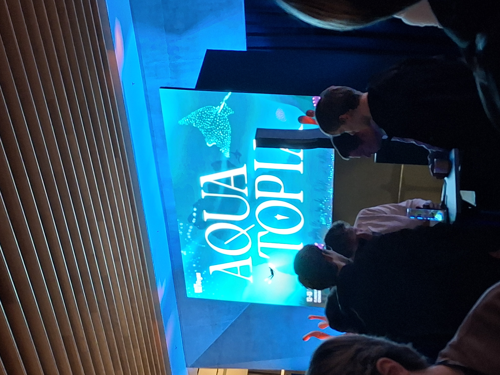
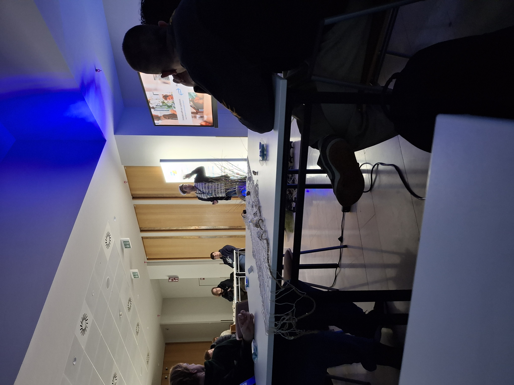
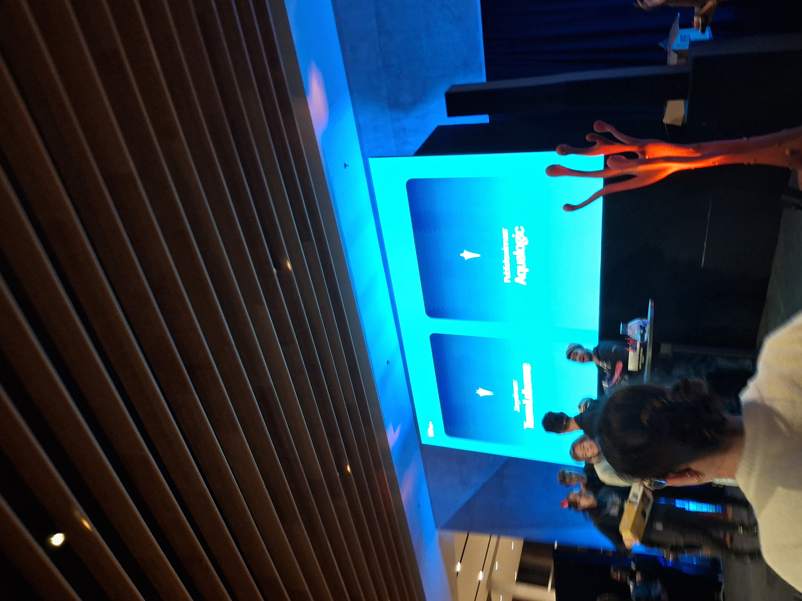
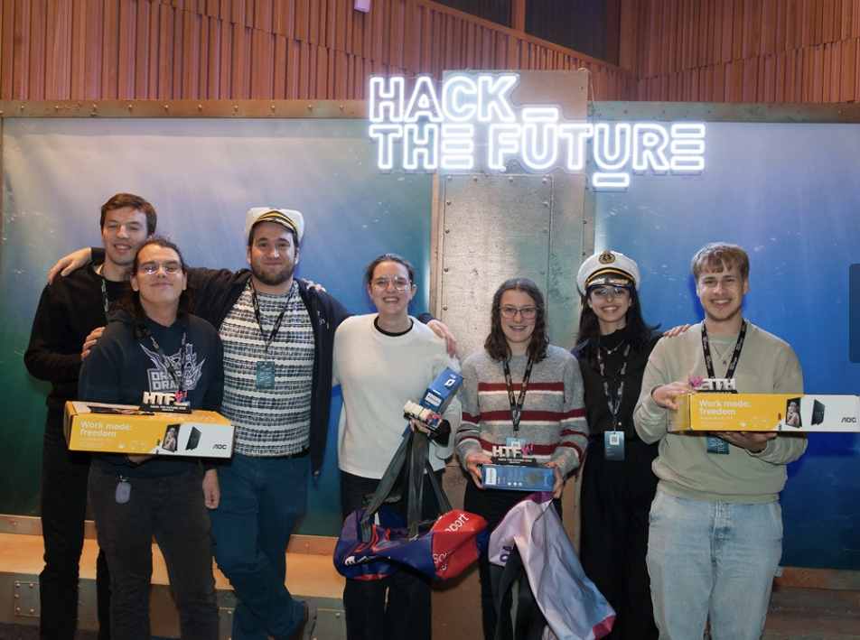

Hack the Future




Every year, the Cronos Group organizes a large-scale hackathon aimed at IT and creative students, bringing together innovation, teamwork, and real-world problem-solving. The event runs from 08:00 to 21:00 and is part of a two-day format, with one day focused more on IT students and the other on creative profiles.
Cronos Group, a Belgian IT and innovation company, is known for delivering digital solutions, software development, cloud services, cybersecurity, AI, and consultancy. They also actively invest in startups and operate across sectors such as banking, media, energy, and government. Their hackathon reflects this expertise by offering diverse and challenging scenarios for participants.
During the event, participants can choose from several challenges. I teamed up with Inez Stroobandt to work on the “S.O.S. Abyss” challenge, developed by Flexso. The scenario placed us in an underwater research facility that had been attacked by an unknown entity. As a result, multiple systems had failed, and it was our task to restore them. By solving these technical issues, we gradually uncovered clues about the mysterious attacker.
We spent the entire day working intensively on the challenge, combining technical skills with creative thinking. At the end of the day, each team presented their solution in a pitch. Two winners were selected: a jury winner and a public winner.
To our surprise, Inez and I were chosen as the public winners. It was an unexpected and rewarding outcome, especially considering the high level of creativity and technical skill among all participants.
This experience allowed me to learn a great deal. As a Software Engineering student, I am already familiar with problem-solving in technical contexts, but this event pushed me to apply those skills in a more dynamic and collaborative environment. It also highlighted the importance of communication and storytelling when presenting a solution.
The event itself was very well organized. Everything was clearly communicated, and participants were provided with meals throughout the day, including breakfast, lunch, and an evening buffet. This contributed to a smooth and enjoyable experience.
Looking ahead, I would definitely participate again and highly recommend this hackathon to anyone interested in IT, innovation, and creative challenges. It is a valuable opportunity to learn, connect with others, and test your skills in a real-world scenario.